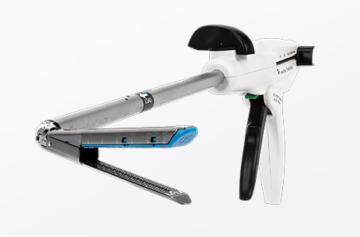

Stents and Stapling
Stent design optimization, Motor-current sensing, signal processing, and testing

Overview
I helped design a stent for the iliac artery, and worked on optimizing electromechanical surgical stapler design.
Highlights
- Created test methods and fixturing to optimize design of load bearing components, simulating anatomical cyclic loading
- Developed algorithms to correlate stapling compressive load scenario to motor current and removing need for strain gauge
- Protoyped magnetometer based position sensing architecture - engineering custom circuitry, bench setup, and data pipeline
- Built Python pipelines to process and visualize performance metrics.